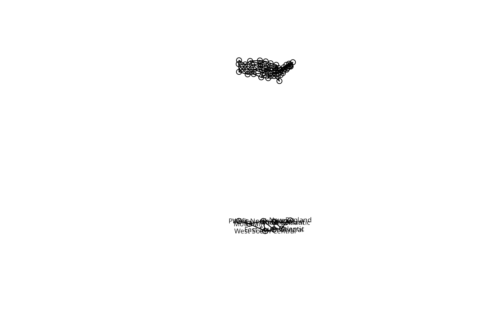

Aggregate a spatial neighbours object
aggregate.nb.RdThe method aggregates a spatial neighbours object, creating a new object listing the neighbours of the aggregates.
Usage
# S3 method for class 'nb'
aggregate(x, IDs, remove.self = TRUE, ...)Author
Roger Bivand Roger.Bivand@nhh.no
Examples
data(used.cars, package="spData")
data(state)
cont_st <- match(attr(usa48.nb, "region.id"), state.abb)
cents <- as.matrix(as.data.frame(state.center))[cont_st,]
opar <- par(mfrow=c(2,1))
plot(usa48.nb, cents, xlim=c(-125, -65), ylim=c(25, 50))
IDs <- as.character(state.division[cont_st])
agg_cents <- aggregate(cents, list(IDs), mean)
agg_nb <- aggregate(usa48.nb, IDs)
plot(agg_nb, agg_cents[, 2:3], xlim=c(-125, -65), ylim=c(25, 50))
text(agg_cents[, 2:3], agg_cents[, 1], cex=0.6)

par(opar)